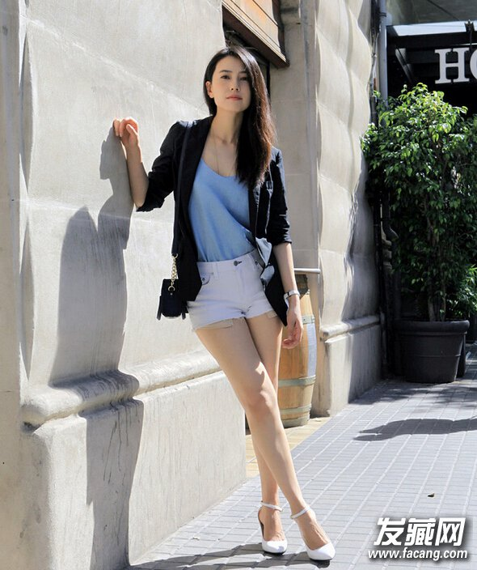
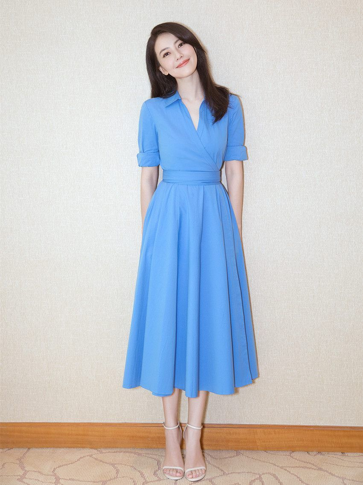
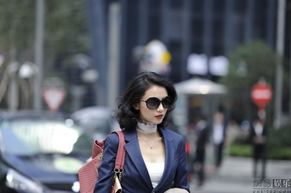

中国内地女演员、模特
代表作 《爱情麻辣烫》> 《十七岁的单车》 《倚天屠龙记》 《青红》 《南京南京》 《单身男女》 《搜索》 《咱们结婚吧》
高圆圆（1979年10月5日-，原名高圆圆），1979年10月5日出生于北京市，
中国内地影视女演员、模特。1996年被广告公司发掘。1997年主演了
个人首部大荧幕作品《爱情麻辣烫》。2005年因在剧情片《青红》中饰演女主
人公青红入围戛纳电影节最佳女主角奖。2007年因在爱情电影《男才女貌》中饰
演<聋哑幼师秦小悠获得第11届电影表演艺术学会奖新人奖。2008年拍摄典雅
《南京！南京！》...>>>
1997年被导演张扬看中接拍电影《爱情麻辣烫》，扮演了女学生何玲，高圆圆
开始被大家所熟悉。她都延续了这一形象。不同的是，高圆圆并没有像其他大陆演员
一样报考专业的艺术院校，而是就读于一所普通高校中国工运学院现在现改名为中国劳动
关系学院）。在大学期间间断出演了一些电影与电视剧，以清丽清纯的邻家女孩形象
而为人所知。[1]2000年，奥运会期间频频在电视上播出的清嘴含片广告让她为大家所熟
知，人们一度称她为“清嘴女孩”。[2]

2001年高圆圆参加拍摄的电影《十七岁的单车》入围第51届柏林影展竞赛单元，这部影片认为是影展中的一匹黑马。
高圆圆《倚天屠龙记》饰演周芷若剧照高圆圆《倚天屠龙记》饰演周芷若剧照（共5张）
2003年，高圆圆首次尝试古装武侠剧，在金庸经典名著《倚天屠龙记》电视剧中饰演峨眉
派掌门周芷若。[9]
2005年9月1日，她更是在百合小姐选拔赛中领先徐静蕾、董洁、刘亦菲等一线女星，获得了
首届中国“百合小姐”称号。同年，随着电影《青红》在国内为的播映，这部电影也参加了第58届
<戛纳电影节并获得“评委会奖”。之后与成龙合作拍摄《宝贝计划》，高圆圆本人也开始登上金像奖、
金像奖的舞台。电影《郎才女貌》中高圆圆的形象依然是清纯可人，但在《第三个人》中她有着颠覆
性的表演，只是这部影片未有太大的影响力。[1]
高圆圆是目前国内气质最纯净、独特的一线女影星，更是内地除巩俐、章子怡以外出席国际三大电影节
奖台最多的女演员。2005年，高圆圆主演电影《青红》在戛纳摘得评委会大奖，同年与陈木胜、成龙合
作电影《宝贝计划》，正式跻身内地一线明星行列。2007年，高圆圆试镜《南京，南京》中
女主角姜淑云，在剧组主创投票表决中高票中选，从而顺利出演女主角。

《单身男女》为追寻爱情，苏州女孩程子欣随男友来至香港，在一家金融公司供职。谁知男友移情别恋，令子欣备受打击。
偶然机缘，她结识了正处于瓶颈期的建筑师方启宏，二人互相勉励，子欣丢掉了关于前男友的一切，
启宏也决定重新出发，并相约一周后给子欣看最新的设计图。谁知约会当晚，子欣却失约了。
原来在子欣的办公室对面，另一家公司的老板张申然长久以来一直注视着她。在她失落期间，两人通过彩色贴纸交流，子欣也渐渐喜欢上了这个大男孩。子欣忘记了和启宏的约定，与申然约在某咖啡厅见面，而申然却睡在了另一个女人
的床上。阴差阳错，让三个人的缘分暂时中断。直到三年后的一天，未了的情缘继续上演。 [1]
